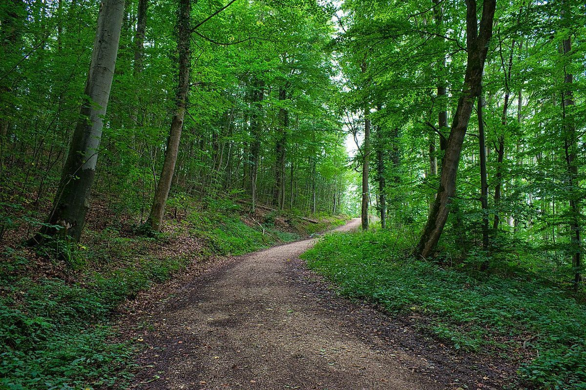
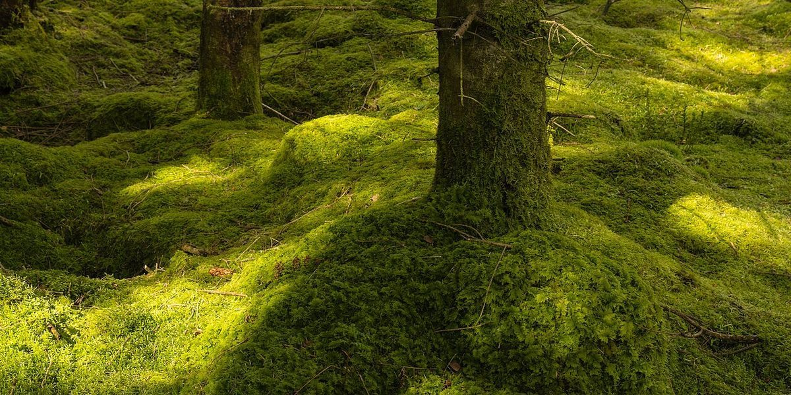
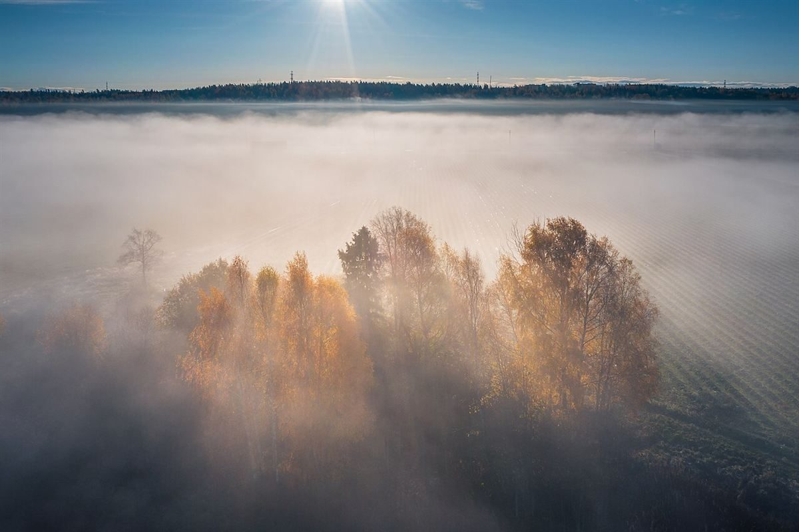
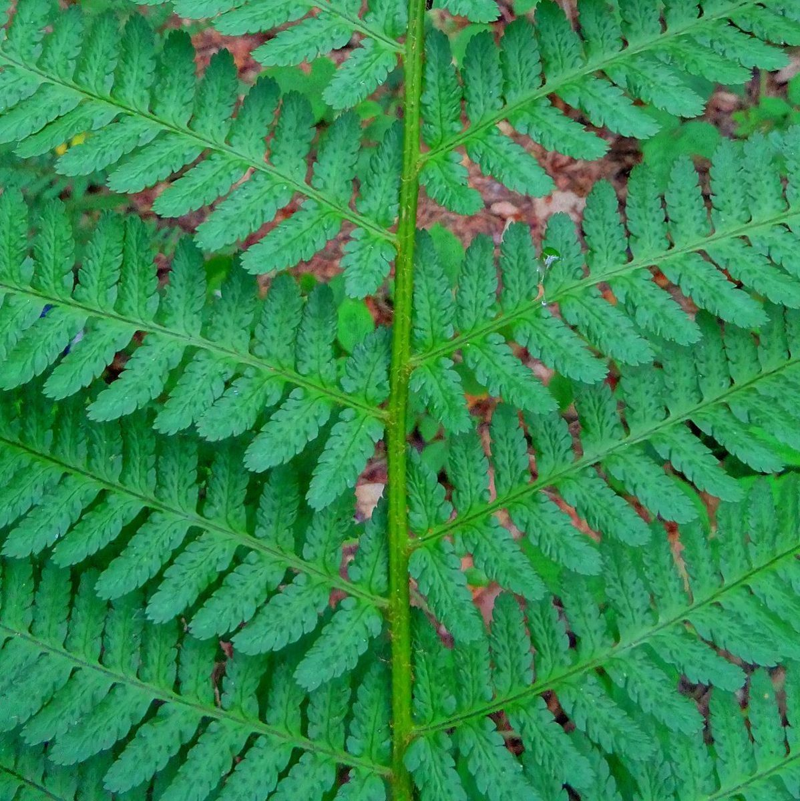

海

森
制作側の連想
「海」は氵が三つの点、「森」は木が三本
お店の名前を見て、制作側は漢字の形を連想しました。「海」はさんずいの三つの点、「森」は木が三本。そこでこのサイトは、三つの点(氵)と三本の木で、ページを「海」と「森」に分けて組んでいます。制作側の連想で、お店の理念・由来とは無関係です。名前の由来や、お店が何を大切にしているかは分かりません。
氵の側
三つの点を、三枚の水辺で。
写真は浜田市の風景ではありません。イメージとして選んだ、国外・撮影地不明のフリー素材です。


木木木 の側
三本の木を、三枚の木立で。



ご案内
お店のこと(確認できたものだけ)
| 所在地 | 〒697-0006 島根県浜田市下府町2164-3 |
|---|---|
| 電話 | 080-5237-9642 |
| 営業時間 | 準備中 |
| 定休日 | 準備中 |
| ご予約 | 準備中 |
| 駐車場 | 準備中 |
| SNS | Instagram @teru2.2spices |